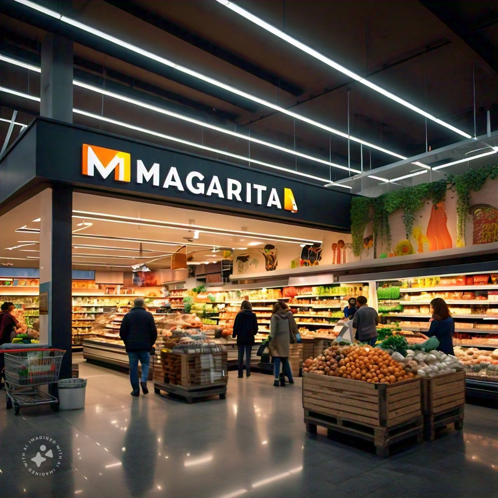

Bienvenido a Supermercado Margarita
Tu lugar de confianza para comprar productos de calidad.
Nuestra Historia
Supermercado Margarita abrió su primera sucursal en Olavarría en 1995, fundado por Don Marcos Ginter en honor a su abuela, conocida por su generosidad. Con un compromiso firme en ofrecer productos de calidad y un servicio excepcional, pronto se convirtió en el favorito de la comunidad local. A lo largo de los años, Supermercado Margarita ha crecido, abriendo nuevas sucursales y expandiendo su oferta, pero siempre manteniendo la esencia de su primera tienda: un lugar donde los clientes se sienten como en familia. Hoy, seguimos orgullosos de nuestras raíces y de ser un pilar en cada comunidad que servimos.
Productos
Ofrecemos una amplia gama de productos frescos y de calidad, desde frutas y verduras, hasta carnes, lácteos, y productos de limpieza. Visita nuestras sucursales para descubrir nuestras ofertas semanales y promociones especiales.
Producto en Oferta
Cortes de carne de vaca seleccionados en oferta
Precio original: $700
Precio con descuento: $490
¡Aprovecha un 30% de descuento en este producto!
Información General
Supermercado Margarita está comprometido con la comunidad. Trabajamos con proveedores locales para ofrecer productos frescos y de alta calidad. Contamos con varias sucursales en la región, cada una equipada para brindarte la mejor experiencia de compra.
Horario de atención: Lunes a Sábado de 8:00 a 20:00, Domingos de 9:00 a 14:00.
Dirección: Julio Argentino Roca 1974, Olavarría, Buenos Aires, Argentina.